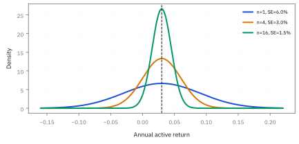
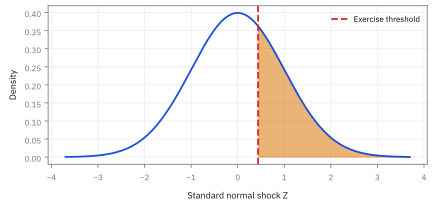

14.2 The Central Limit Theorem
ทำไมค่าเฉลี่ยจำนวนมากจึงเริ่มมีรูปคล้ายระฆังคว่ำ
กองทุนสองกองมีค่าเฉลี่ยเท่ากันจากข้อมูลเพียงไม่กี่ปี; ค่าเฉลี่ยที่เห็นบอกความสามารถได้มากแค่ไหน?
เฉลย: ยังบอกไม่ได้จากเลขจุดเดียว—ต้องดูว่าค่าเฉลี่ยแกว่งได้กว้างเพียงใด. Central Limit Theorem (CLT) บอกว่า เมื่อเงื่อนไขเหมาะสม ค่าเฉลี่ยจากตัวอย่างใหญ่จะมีรูปใกล้ Normal จึงใช้วัดความไม่แน่นอนรอบค่าเฉลี่ยได้. ผลรวมมักมีรูป Normal แม้สมาชิกแต่ละคนหน้าตาไม่เหมือนกัน.
ศัพท์ที่ใช้ในหัวข้อนี้
- Central Limit Theorem (CLT)
- Central Limit Theorem อธิบายว่าเมื่อรวมตัวแปรอิสระจำนวนมากที่มี variance หรือขนาดการแกว่งกำลังสองโดยเฉลี่ยแบบจำกัด แล้วปรับสเกลอย่างถูกต้อง ผลรวมจะมีรูปใกล้ normal ใช้สร้างช่วงและการทดสอบจากค่าเฉลี่ย
- normal distribution
-
คืออะไร: รูประฆังคว่ำสมมาตร ที่กำหนดได้ครบด้วยจุดกลางและความกว้าง
ใช้ทำอะไร: เป็นรูปร่างที่ค่าเฉลี่ยของข้อมูลจำนวนมากจะกลายเป็น ไม่ว่าข้อมูลดิบจะมีรูปอะไร
ทำไมถึงน่าทึ่ง: เพราะข้อสรุปนี้ไม่สนใจเลยว่าข้อมูลดิบหน้าตาอย่างไร โยนเหรียญ ทอยลูกเต๋า หรือผลตอบแทนที่เบ้ ค่าเฉลี่ยก็ยังเข้าหารูปเดียวกันนี้
- standard normal
-
คืออะไร: ระฆังคว่ำที่ย้ายจุดกลางมาที่ศูนย์และปรับความกว้างเป็นหนึ่ง
ใช้ทำอะไร: เป็นรูปเดียวที่เราเปิดตารางค่าได้ ตัวอื่นแปลงมาหาตัวนี้ก่อนเสมอ
ทำไมต้องมีรูปมาตรฐาน: เพราะระฆังคว่ำมีได้ไม่จำกัดรูป ตามจุดกลางและความกว้างที่ต่างกัน การมีรูปกลางหนึ่งรูปทำให้ทำตารางเดียวใช้ได้กับทุกกรณี
- sampling distribution
- sampling distribution คือ distribution ของ estimator หากเก็บตัวอย่างใหม่ภายใต้ process เดิมซ้ำหลายครั้ง ใช้ตอบว่าค่าประมาณแกว่งแค่ไหน แม้โลกจริงให้เราดูได้เพียงตัวอย่างเดียว
- Information ratio (IR)
- Information ratio (IR) คือ active return เฉลี่ยเทียบกับ active risk ใน horizon เดียวกัน ใช้ประเมินคุณภาพของผลตอบแทนเมื่อเทียบกับ benchmark และวางแผน track record
- independence
-
คืออะไร: การที่รู้ผลของตัวหนึ่งแล้วไม่ได้บอกอะไรเลยเกี่ยวกับอีกตัวหนึ่ง
ใช้ทำอะไร: เป็นเงื่อนไขที่ทฤษฎีในหัวข้อนี้ต้องการ
ทำไมต้องตรวจก่อนใช้: เพราะผลตอบแทนของตลาดจริงไม่เป็นแบบนี้ในวันวิกฤต ทุกอย่างวิ่งพร้อมกัน และนั่นคือวันที่การประมาณด้วยระฆังคว่ำพลาดมากที่สุด
- quantile
-
คืออะไร: ค่าที่แบ่งข้อมูลตามสัดส่วน เช่นค่าที่มีข้อมูลอยู่ต่ำกว่า 5 เปอร์เซ็นต์
ใช้ทำอะไร: ใช้แปลงระดับความเชื่อมั่นให้เป็นตัวเลขที่ใส่ในสูตรได้
ทำไมต้องใช้: เพราะคำถามในทางปฏิบัติมักถามถึงหาง เช่นแย่ที่สุดใน 20 วันคือเท่าไร ซึ่งเป็นคำถามเรื่องตำแหน่ง ไม่ใช่คำถามเรื่องค่าเฉลี่ย
- alpha
-
คืออะไร: ผลตอบแทนส่วนที่เกินจากสิ่งที่อธิบายได้ด้วยการรับความเสี่ยงตลาดทั่วไป
ใช้ทำอะไร: เป็นสิ่งที่กลยุทธ์อ้างว่ามี และเป็นสิ่งที่สถิติในบทนี้ต้องตรวจสอบ
ทำไมต้องตรวจด้วยสถิติ: เพราะกลยุทธ์ที่โชคดีกับกลยุทธ์ที่เก่งจริง ให้กราฟผลตอบแทนที่หน้าตาเหมือนกันได้ ถ้าดูเฉพาะช่วงสั้น
- liquidity
-
คืออะไร: ความง่ายในการซื้อขายขนาดที่ต้องการ โดยไม่ทำให้ราคาขยับหนี
ใช้ทำอะไร: ใช้ตัดสินว่ากลยุทธ์ที่ทดสอบแล้วดี จะยังดีอยู่ไหมเมื่อลงเงินจริง
ทำไมต้องคิดถึงตอนนี้: เพราะการทดสอบสมมติว่าเราซื้อขายได้ที่ราคาที่เห็น ซึ่งจริงเฉพาะเมื่อขนาดของเราเล็กพอเทียบกับตลาดนั้น
- long-run multiplier
- long-run multiplier คือปัจจัยที่ขยาย standard error เมื่อ observation มี dependence ใช้ปรับ effective sample size และช่วงความไม่แน่นอนให้ไม่แคบเกินจริง
- variance
- variance คือค่าเฉลี่ยของ squared deviation จากค่ากลาง ใช้วัดความผันผวนในสูตร standard error และระบุเงื่อนไขที่ CLT ต้องการ
สัญลักษณ์ที่ใช้ในหัวข้อนี้
| สัญลักษณ์ | ความหมาย | หน่วย |
|---|---|---|
| $X_i$ | ผลตอบแทนส่วนเกินของปีที่ $i$ หนึ่งค่าต่อหนึ่งปี | decimal/year |
| $\mu$ | ค่ากลางจริงที่เรามองไม่เห็น เป็นตัวที่ค่าเฉลี่ยของข้อมูลพยายามเข้าใกล้ | decimal/year |
| $\sigma^2$ | ความกว้างจริงของข้อมูลรายปี เป็นตัวกำหนดว่าเข้าใกล้ช้าแค่ไหน | decimal²/year² |
| $\bar X_n,Z_n$ | ค่าเฉลี่ยจาก $n$ ปี และค่าเฉลี่ยหลังหักศูนย์กลางแล้วเทียบกับ standard error | decimal/year; ไม่มีหน่วย |
| $n$ | จำนวนปีที่เป็นอิสระต่อกันจริง ไม่ใช่จำนวนแถวในไฟล์ | years |
| $\alpha$ | สัดส่วนความผิดพลาดที่เรายอมรับ เลือกเองก่อนดูข้อมูล | ไม่มีหน่วย |
| $z_{1-\alpha/2}$ | จุดตัดบนระฆังคว่ำมาตรฐานที่ให้พื้นที่ตรงกลางตามที่ขอ | ไม่มีหน่วย |
| $\mathrm{IR},t$ | Information ratio ต่อปี และ standardized test statistic สำหรับค่าเฉลี่ย | ไม่มีหน่วย; ไม่มีหน่วย |
ที่มาที่ไป: ทำไมระฆังคว่ำถึงโผล่มาในเรื่องที่ไม่เกี่ยวกันเลย
ปริศนาที่ค้างมาตั้งแต่บทที่หนึ่งคือ ทำไมเส้นโค้งรูปเดียวกันถึงปรากฏทั้งในความสูงของคน ความคลาดเคลื่อนของการวัดดาว และผลตอบแทนของพอร์ต
de Moivre เจอมันในปี 1733 ในฐานะ estimator ของการโยนเหรียญ แต่ยังไม่มีใครอธิบายได้ว่าทำไมมันถึงกว้างขวางขนาดนั้น
คำอธิบายมาจาก Laplace และถูกทำให้รัดกุมขึ้นเรื่อย ๆ ในศตวรรษที่สิบเก้าและยี่สิบ ใจความคือรูปนี้ไม่ได้เป็นสมบัติของสิ่งใดสิ่งหนึ่ง แต่เป็นสมบัติของการ *บวก* หลายอย่างเข้าด้วยกัน
ข้อสรุปนั้นมีทั้งด้านดีและด้านที่ต้องระวัง ด้านดีคือมันทำให้ใช้ระฆังคว่ำกับผลรวมได้อย่างมีเหตุผล ด้านที่ต้องระวังคือมันเข้าใกล้เร็วตรงกลางแต่ช้ามากที่ปลายหาง ซึ่งเป็นจุดที่งานความเสี่ยงสนใจที่สุด
Worked Example — โจทย์และสิ่งที่ให้มา
โจทย์ให้อะไรมาบ้าง: return รายวันของหุ้นสามารถ skew, มี jump และเปลี่ยน volatility ได้ จึงไม่ควรประกาศว่า return เดี่ยวเป็น normal เพียงเพราะ histogram ดูเนียน. Central Limit Theorem ไม่ได้อ้างเช่นนั้น; มันอ้างถึงผลรวมและค่าเฉลี่ยหลังปรับศูนย์กลางและสเกล ภายใต้ independence หรือ dependence ที่อ่อนพอ และ variance จำกัด
ตัวอย่างใช้ active return รายปีของ manager เทียบ benchmark ในสกุล decimal: $\mu=0.03$, $\sigma=0.06$. การประกาศ active return เป็น $3\%$ โดยไม่บอกว่าอิงกี่ปี มีสาระพอ ๆ กับบอกว่าเครื่องบินเร็วโดยไม่บอกหน่วย.
ขั้นที่ 1 — ลองด้วยมือ: ทอยลูกเต๋าสองลูกแล้วนับ
ก่อนสูตร ลองนับสิ่งที่นับได้: ผลรวมของลูกเต๋าสองลูกและสี่ลูก มีกี่วิธีที่จะได้แต่ละค่า
ลูกเต๋าลูกเดียวไม่มีอะไรคล้ายระฆังคว่ำเลย ทุกหน้าโอกาสเท่ากัน แต่พอบวกสองลูก ผลรวม 7 เกิดได้ 6 วิธี (1+6, 2+5, 3+4, 4+3, 5+2, 6+1) ขณะที่ 2 เกิดได้วิธีเดียว จึงกลายเป็นสามเหลี่ยม
บวกสี่ลูก ยอดตรงกลางเกิดได้ 146 วิธีจาก 1,296 ส่วนปลายทั้งสองเกิดได้วิธีเดียว รูปเริ่มโค้งมนเหมือนระฆัง เหตุผลคือ ‘ตรงกลาง’ ประกอบขึ้นได้หลายทาง ส่วน ‘ปลาย’ ต้องให้ทุกลูกออกสุดโต่งพร้อมกัน
นี่คือทั้งหมดของทฤษฎีบทนี้ในภาษานับนิ้ว: ระฆังคว่ำไม่ใช่สมบัติของลูกเต๋า แต่เป็นสมบัติของการ *บวก* หลายตัวที่เป็นอิสระกัน สูตรข้างล่างแค่บอกว่าต้องเลื่อนและย่ออย่างไรให้รูปนี้นิ่ง
ขั้นที่ 2 — การ normalize ที่ทำให้หลาย scale เทียบกันได้
ผลรวมโตขึ้นเรื่อย ๆ และความกว้างก็โตด้วย จะเทียบกันได้ต้องปรับให้อยู่บนไม้บรรทัดเดียวกันก่อน ห้าบรรทัดนี้แยกให้ชัดว่าอะไรคำนวณเองได้ และอะไรคือตัวทฤษฎีบทจริง ๆ ซึ่งมีแค่บรรทัดเดียว คือเรื่องรูปทรง
ยกผลของหัวข้อ 14.1 มา แล้วทำ standardization แบบเดียวกับ z-score ในหัวข้อ 1.9 คือลบจุดกลางแล้วหารความกว้าง เหตุผลที่ต้องทำ คือของที่ยังไม่ปรับจะหดเข้าหาจุดเดียวจนไม่เหลืออะไรให้ดู
ตรวจว่าทำถูกด้วยการคำนวณจุดกลางและความกว้างของตัวใหม่ ได้ศูนย์กับหนึ่ง ซึ่งอ่านออกมาจากสองบรรทัดบนตรง ๆ
บรรทัดสี่คือทฤษฎีบทที่เราจะสร้างที่มาและกลไกในขั้นถัดไป สังเกตให้ดีว่ามันบอกเรื่องรูปทรงเท่านั้น ไม่ได้บอกเรื่องจุดกลางหรือความกว้าง สองอย่างนั้นเราคำนวณเองไปแล้ว
ย้อนการปรับกลับได้รูปที่ใช้งานจริง จุดเหนือสัญลักษณ์เตือนว่านี่เป็นค่าประมาณที่ต้องตรวจ ไม่ใช่ความจริงที่ทุก $n$ และลูกศรหมายถึงรูปทรงลู่เข้า ไม่ได้แปลว่าค่าใดค่าหนึ่งเท่ากับระฆังพอดี
ที่มาและกลไก: จากการโยนเหรียญสู่สะพานเชื่อม moment generating function (MGF)
จุดเริ่มต้นของระฆังคว่ำไม่ได้มาจากห้องทดลองวิทยาศาสตร์ แต่มาจากโต๊ะพนันในลอนดอนราว ๆ ปี 1738 เมื่อ Abraham de Moivre พยายามคำนวณโอกาสออกหัวก้อยในการโยนเหรียญหลายร้อยครั้ง ปัญหาคือสูตร binomial เดิมต้องคูณแฟกทอเรียลตัวเลขมหาศาลที่ไม่มีใครในยุคนั้นคำนวณไหว เขาจึงค้นพบสูตรประมาณเส้นโค้งระฆังคว่ำเพื่อใช้แทนการบวกเลขทีละช่อง
ต่อมาในปี 1810 Pierre-Simon Laplace ขยายผลลัพธ์นี้ไปสู่การวัดทางดาราศาสตร์ โดยสังเกตว่าความคลาดเคลื่อนของกล้องโทรทรรศน์เกิดจากปัจจัยรบกวนเล็ก ๆ นับพันอย่างรวมกัน Laplace เสนอให้ใช้ generating function เพื่อเปลี่ยนการ convolution ที่ซับซ้อนให้เป็นการคูณเลขธรรมดา
สิ่งที่ de Moivre และ Laplace ค้นพบคือข้อเท็จจริงอันทรงพลัง: เมื่อเราบวกสิ่งสุ่มที่เป็นอิสระต่อกันจำนวนมาก รายละเอียดเฉพาะตัวของแต่ละตัวแปร เช่น skewness หรือรูปทรงแปลกประหลาด จะถูกส่วนด้วย $\sqrt{n}$ จนจางหายไป เหลือร่องรอยไว้เพียงจุดศูนย์กลางและ variance เท่านั้น
ขั้นที่ 3 — ทำไมต้องเป็นระฆังคว่ำ: พิสูจน์ CLT ด้วย Taylor expansion และ MGF
การพิสูจน์นี้แสดงให้เห็นโครงสร้างภายในของ CLT: ค่าเฉลี่ยไม่ได้กลายเป็นระฆังคว่ำเพราะเวทมนตร์ แต่เพราะการบวกสิ่งสุ่มที่เป็นอิสระทำให้พจน์กำลังสองใน Taylor expansion มีอำนาจเหนือทุกพจน์อื่น
แปลงตัวแปรแต่ละตัวให้มีจุดศูนย์กลางที่ศูนย์และ variance เท่ากับหนึ่ง เพื่อให้ผลรวม $Z_n$ ไม่ระเบิดและไม่แฟบ จากนั้นใช้เครื่องมือที่เปลี่ยนการบวกของ random variable ให้กลายเป็นการคูณ คือ MGF
กาง Taylor expansion ของ exponential function พจน์แรกคือหนึ่ง พจน์ถัดมาหลุดไปเพราะ expected value เป็นศูนย์ เหลือพจน์กำลังสองที่มีตัวคูณเป็น variance นี่คือจุดชี้ขาด: ไม่ว่า distribution ดั้งเดิมจะเบ้แค่ไหน พจน์กำลังหนึ่งก็ตาย และพจน์กำลังสองจะขึ้นมาเป็นตัวหลักเสมอ
ความเป็น independence ทำให้ MGF ของผลรวมแยกออกเป็นการคูณกัน $n$ ตัว เมื่อใส่สเกล $t/\sqrt{n}$ เข้าไป ตัวหาร $\sqrt{n}$ ถูกยกกำลังสองกลายเป็น $n$ พอดี จึงไปตัดกับจำนวนครั้งที่คูณกันในเลขชี้กำลัง
เมื่อส่ง $n$ สู่ infinity นิยาม limit $\lim_{n\to\infty}(1+a/n)^n=e^a$ บีบให้พจน์กำลังสูงกว่าสองหายไปทั้งหมด ผลลัพธ์สุดท้ายลู่เข้าหา $e^{t^2/2}$ ซึ่งตรงกับ MGF ของ standard normal ทฤษฎีบทจึงถูกพิสูจน์จากพีชคณิตพื้นฐาน
ลองแทนตัวเลขจริง: ถ้า $t=1$ ค่าเป้าหมายคือ $e^{0.5}\approx 1.6487$ เมื่อมีตัวอย่างเพียง $n=10$ จะได้ $(1+1/20)^{10}=(1.05)^{10}\approx 1.6289$ ต่างกันไม่ถึงสองเปอร์เซ็นต์ ระฆังคว่ำจึงทำงานได้เร็วมากแม้อยู่ใน sample ขนาดเล็ก
เงื่อนไขชี้ขาดคือ variance ต้องมีค่าจำกัด ($\sigma^2 \lt \infty$) หาก distribution มีหางหนามากจน variance ระเบิด เช่น Cauchy พจน์กำลังสองจะหาค่าไม่ได้ และ CLT จะพังทลายลงโดยสิ้นเชิง
แล้วเอาไปใช้ทำอะไรได้จริงบ้าง
การที่ผลรวมของแรงเล็ก ๆ ออกมาเป็นระฆังคว่ำ อธิบายว่าทำไมรูปนี้ถึงโผล่มาทุกที่
ใช้เป็นเหตุผลรองรับการใช้ระฆังคว่ำในการคำนวณความเสี่ยงและตั้งราคา
ใช้คำนวณว่าต้องใช้เวลากี่ปีถึงจะแยกกลยุทธ์ที่มีฝีมือออกจากกลยุทธ์ที่โชคดีได้
ใช้สร้าง confidence interval สำหรับค่าที่ประมาณมาจากข้อมูล ซึ่งเป็นงานที่ทำทุกครั้งที่รายงานผล
ภาพ 14.2a — ค่าเฉลี่ยแคบลงเมื่อจำนวนปีเพิ่ม

density ของ $\bar X_n$ สำหรับ $n=1,4,16$ ใช้ $\mu=3\%$ และ $\sigma=6\%$ ต่อปี. จุดศูนย์กลางไม่ย้าย แต่ standard error ลดจาก $6\%$ เป็น $3\%$ และ $1.5\%$; ข้อมูลเพิ่มทำให้คำตอบแคบลง ไม่ได้ดันค่ากลางขึ้น.
ขั้นที่ 4 — คุณภาพต่อปีต้องใช้เวลากี่ปีจึงแยกจากศูนย์
แปลงทฤษฎีเป็นคำถามที่โต๊ะถามจริง คือต้องเก็บข้อมูลกี่ปี ห้าบรรทัดนี้ให้ตัวเลขที่น่าตกใจ และมันมาจากการย้ายข้างสมการเดียว ไม่ได้มาจากสมมติฐานพิเศษอะไรเลย
วัดว่าค่าที่เห็นอยู่ห่างจากศูนย์กี่เท่าของความไม่แน่นอน โดยใช้ความกว้างของค่าเฉลี่ยจากหัวข้อ 14.1 แล้วตั้งชื่อคุณภาพต่อปี คือผลตอบแทนเฉลี่ยหารความเหวี่ยง
แยกรากออกมาจะเห็นของที่สำคัญ ค่าที่วัดได้คือคุณภาพคูณรากของจำนวนปี แปลว่ากลยุทธ์ธรรมดาที่รันนานพอ ก็ดูมีนัยสำคัญได้ ความนานทำงานแทนคุณภาพ
กลับทิศสมการ แก้หาจำนวนปีที่ต้องใช้ แล้วแทนเลขจริง คุณภาพครึ่งหนึ่ง ถ้าอยากมั่นใจระดับสอง ต้องเก็บข้อมูลสิบหกปี
สิบหกปีนานกว่าอายุของกลยุทธ์ส่วนใหญ่ นั่นคือเหตุผลที่หัวข้อ 15.7 ต้องมีอยู่ และเป็นเหตุผลที่ตัวเลขนัยสำคัญในวงการนี้เชื่อได้น้อยกว่าที่คิด
ขั้นที่ 5 — ถามย้อนกลับ: ต้องใช้ข้อมูลกี่ปีกว่า t จะถึงสอง
ตัวอย่างเดิมตอบว่า t เท่ากับเท่าไรเมื่อมีข้อมูลสี่ปี คำถามที่มีประโยชน์กว่าในทางปฏิบัติ คือกลับสมการเพื่อหาว่าต้องใช้ข้อมูลเท่าไรจึงจะได้หลักฐานที่หนักพอ
เพราะ t โตตาม $\sqrt{n}$ ของจำนวนปี คำตอบจึงใหญ่กว่าที่คาดไว้มาก
เริ่มจากค่าที่โจทย์ให้: อัตราส่วนข้อมูล 0.50 กับความเสี่ยงเชิงเปรียบเทียบ 6% ต่อปี คูณกันได้ผลตอบแทนส่วนเกินเฉลี่ย 3% ต่อปี ซึ่งเป็นตัวเศษของสถิติทดสอบ
ตัวส่วนคือความคลาดเคลื่อนมาตรฐานของค่าเฉลี่ย ซึ่งหดตาม $\sqrt{n}$ ของจำนวนปี เพราะการเฉลี่ยข้อมูลอิสระหลายปีลดความผันผวนของค่าเฉลี่ยลง
หารกันแล้วได้ $t$ เท่ากับครึ่งหนึ่งของ $\sqrt{n}$ ของจำนวนปี ซึ่งเป็นรูปที่จำง่าย และบอกทันทีว่าการเพิ่มข้อมูลเป็นสี่เท่าไม่ได้ทำให้ $t$ เป็นสี่เท่า แต่เป็นสองเท่า
แทนค่าตั้งแต่สี่ปีถึงหนึ่งร้อยปีจะเห็นว่า $t=2$ ต้องใช้สิบหกปี และ $t=3$ ต้องใช้สามสิบหกปี นี่คือคำตอบว่าทำไมผลงานที่ดูดีในสี่ปีจึงยังพิสูจน์อะไรไม่ได้
คำตอบ ตรวจเอง และแปลว่าอะไร
คำตอบและความหมาย: สมมติ active return เฉลี่ย 3% ต่อปี และ active risk 6% ต่อปี ดังนั้น true Information ratio เท่ากับ 0.50. ถ้ามีข้อมูลอิสระ 4 ปี standard error ของค่าเฉลี่ยประมาณ 3% และ expected test statistic เท่ากับ 1.00 เท่านั้น. ถ้าต้องการ expected statistic เท่ากับ 2 ต้องมีประมาณ 16 ปี; ถ้า IR จริงมีเพียง 0.25 ต้องใช้ประมาณ 64 ปี
ตัวเลข 16 ปีเป็น planning calculation ไม่ใช่คำรับรองว่าจะมีข้อมูลที่ดีพอ. ใน production ต้องรวม turnover, exposure, costs, economic mechanism และ live performance ที่อาจไม่เหมือน research sample. CLT ช่วยสร้าง approximation ของ sampling distribution แต่ไม่ได้สร้าง alpha ให้กลยุทธ์
ตรวจเองใน 10 วินาที: Information ratio 0.50 ต้องใช้ $n=(2/0.50)^{2}=16$ ปีเพื่อให้ expected statistic เท่ากับ 2; ถ้า ratio เหลือ 0.25 จะเป็น 64 ปี. ใช้ตัวเลขนี้วาง research horizon และห้ามสรุปจาก sample 4 ปี.
ภาพ 14.2b — expected t-statistic โตแค่รากของเวลา

สำหรับ Information ratio $0.25,0.50,1.00$ ต่อปี ค่า expected $t$ โตตาม $\mathrm{IR}\sqrt n$. เส้นที่ตัด $t=2$ ที่ 64, 16 และ 4 ปีตามลำดับ แสดงว่าการเพิ่ม skill เล็กน้อยมีผลต่อเวลาที่ต้องรอแบบกำลังสอง.
ภาพ 14.2c — CLT เป็น approximation ไม่ใช่เครื่องซัก tail

เส้นทึบคือ standardized mean ของ $n=30$ observations จาก distribution หางหนาแบบ Student-$t$ (สร้างจากสูตร density ไม่สุ่ม); เส้นประคือ normal. ส่วนกลางเข้าใกล้กัน แต่หางยังต่างกัน จึงต้องแยกการอนุมานค่าเฉลี่ยจากการคุม tail loss.
ภาพ 14.2d — serial correlation ทำให้กราฟแคบเกินจริง

เมื่อ observations รายปีมี serial correlation, standard error ของค่าเฉลี่ยจะไม่ลดตามสูตร iid อย่างเดียว. สำหรับ first-order autocorrelation ที่ rho เท่ากับ 0.5, long-run multiplier ของ standard error โดยประมาณคือรากที่สองของ 3. ต้องใช้ long-run variance หรือ block bootstrap เพื่อไม่ให้ confidence interval แคบเกินจริง
ก่อนใช้ normal approximation ให้ตอบสี่ข้อ
| คำถาม | หลักฐานที่ต้องมี | action เมื่อไม่ผ่าน |
|---|---|---|
| horizon ตรงกันไหม | return และ volatility เป็นรายปีทั้งคู่ | แปลงหน่วยก่อนหาร |
| observations ใกล้อิสระไหม | autocorrelation และ overlapping holdings | ใช้ block/bootstrap หรือ long-run variance |
| variance จำกัดและไม่ถูกครอบโดย outlier เดียวไหม | tail plot และ stress history | รายงาน robust statistic เพิ่ม |
| process คงที่ไหม | regime, mandate, costs, data revisions | split regime หรือหยุด generalize |
CLT ช่วยเรื่อง sampling distribution ของ mean; ไม่ได้ยืนยัน alpha, liquidity หรือ capacity ของกลยุทธ์
ตัวอย่างที่สอง — คำตอบและวิธีเช็ก
คำตอบ: ด้วยอัตราส่วนข้อมูล 0.50 ต้องใช้ข้อมูล 16 ปีจึงจะได้ค่า t เท่ากับ 2 และ 36 ปีจึงจะได้ 3 ไม่ใช่ 4 ปีอย่างที่ตัวอย่างแรกอาจทำให้เข้าใจ
ตรวจเองใน 10 วินาที: หา $\sqrt{n}$ ของจำนวนปีแล้วคูณด้วย 0.5 ต้องได้ค่า t ที่แสดงไว้ ถ้าไม่ตรงให้ตรวจว่าใช้จำนวนปีหรือจำนวนเดือน
ใช้ตัดสินใจ: ก่อนสรุปว่ากลยุทธ์หนึ่งดีกว่าอีกกลยุทธ์ ให้คำนวณจำนวนปีที่ต้องใช้ก่อน ถ้ามากกว่าอายุของทีม แปลว่าข้อสรุปนั้นยังไม่ควรถูกใช้ตัดสินใจลงทุน
กับดัก: เพิ่มความถี่ไม่เท่ากับเพิ่มเวลา
minute bars เพิ่มจำนวนแถวได้เร็ว แต่ไม่ได้เพิ่มจำนวน market regimes ที่เห็น. ถ้า returns มี dependence หรือผลทั้งหมดขับเคลื่อนด้วยข่าวก้อนเดียวกัน square-root rule จะทำให้ความแน่นอนปลอม. การแปลง daily volatility เป็น annual volatility จึงต้องตรวจ dependence, seasonality และ holding period ให้ตรงกัน
ใน production ให้ log horizon, data version, corporate-action version, timestamps, fills และกติกาคำนวณ return. ใช้ rolling estimate, รายงาน uncertainty ของ window และ throttle exposure เมื่อ estimate เปลี่ยนแรง แทนการให้ model เชื่อค่าจุดเดียว.
ข้อจำกัด: วิธีนี้สมมติอะไร และของจริงเป็นอย่างไร
| เรื่อง | วิธีนี้สมมติว่า | ของจริงเป็นอย่างไร | ผลที่ตามมาเวลาใช้งาน |
|---|---|---|---|
| ความเร็วในการเข้าใกล้ | เข้าใกล้ระฆังคว่ำเร็ว | ตรงกลางเข้าเร็ว แต่ปลายหางเข้าช้ามาก | การใช้ระฆังคว่ำคำนวณความเสี่ยงที่ระดับความเชื่อมั่นสูงยังผิดอยู่ แม้ข้อมูลจะเยอะ |
| independence | แต่ละตัวไม่เกี่ยวกัน | ผลตอบแทนเกี่ยวพันกัน | การเข้าใกล้ช้าลงมาก และ confidence interval ที่คำนวณได้แคบเกินจริง |
| ความเหวี่ยงจำกัด | แต่ละตัวมีความเหวี่ยงจำกัด | บางตลาดมีหางอ้วนจนความเหวี่ยงไม่จำกัด | ทฤษฎีนี้ใช้ไม่ได้เลยในกรณีนั้น ต้องใช้ทฤษฎีคนละชุด |
แถวแรกเป็นเหตุผลที่ Value at Risk ที่ระดับ 99.9% ยังไม่น่าเชื่อถือ แม้จะมีข้อมูลหลายปี
ก่อนไปต่อ — สู่ estimator
CLT ให้รูปคร่าว ๆ ของค่าเฉลี่ยแล้ว แต่ยังไม่ตอบว่า formula ที่เรากดในโค้ดเล็งเป้าถูกหรือไม่. บท 14.3 จะแยก bias ออกจาก variance และ standard error: กระสุนอาจกระจายกว้าง หรือปืนอาจตั้งศูนย์ผิด — แก้คนละวิธี.
สรุปที่ใช้ได้จริง
- Central Limit Theorem อธิบาย distribution ของค่าเฉลี่ยหลัง normalize ไม่ได้ประกาศว่า return เดี่ยวเป็น normal.
- สำหรับ IR $0.50$ ต่อปี ต้องใช้ประมาณ 16 ปีจึงมี expected $t=2$ ภายใต้ iid.
- standard error ต้องตรงกับ units และ horizon ของ estimate; data frequency ไม่ได้สร้าง independent time span.
- tail risk, autocorrelation และ regime change เป็นข้อจำกัดของ normal approximation ที่ต้องเข้ากระบวนการ risk control.
- สถิติทดสอบโตตาม $\sqrt{n}$ ของจำนวนปี ไม่ใช่ตามจำนวนปี: อัตราส่วนข้อมูล 0.50 ต้องใช้ 16 ปีจึงได้ t=2 และ 36 ปีจึงได้ t=3